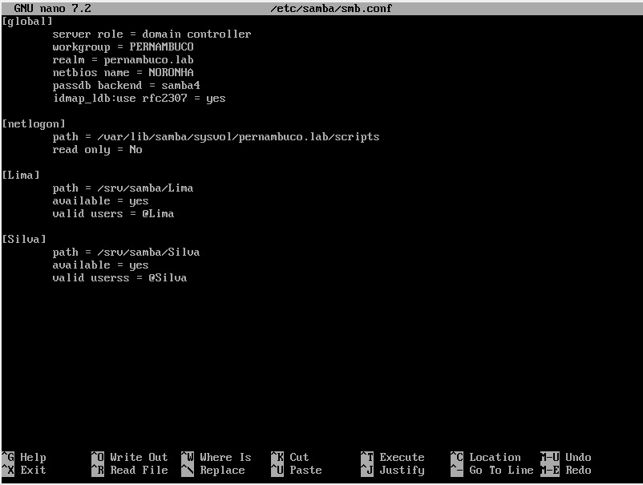
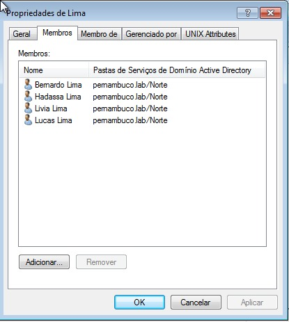
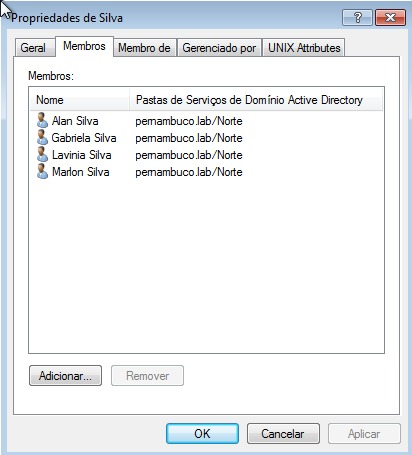
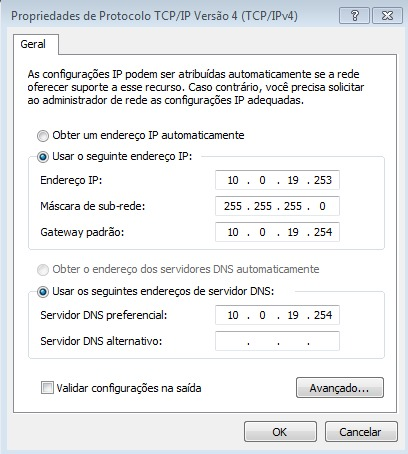
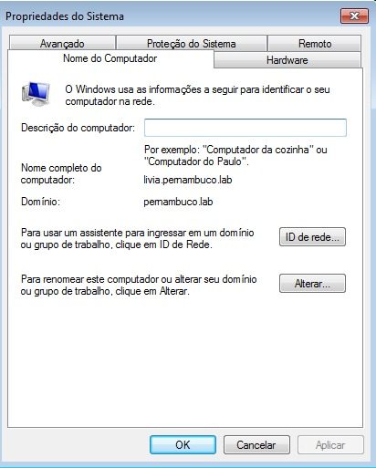

SAMBA
O que seria o Samba?
O Samba é um software servidor que permite compartilhar arquivos, impressoras e outros recursos em redes formadas por computadores com diferentes sistemas operacionais.
- Compartilhamento de arquivos: o Samba permite compartilhar arquivos entre computadores em uma rede. Os arquivos compartilhados podem ser acessados por qualquer computador que tenha o Samba instalado.
- Compartilhamento de impressoras: o Samba permite compartilhar impressoras entre computadores em uma rede. Os computadores que compartilham uma impressora podem imprimir documentos sem a necessidade de instalar um driver de impressora em cada computador.
- Controle de acesso: o Samba permite controlar o acesso a recursos de rede. Os administradores de rede podem criar grupos de usuários e definir as permissões de acesso para cada grupo.
Instalação
Para iniciar a instalação vamos primeiramente atualizar o sistema, através do comando:
apk add samba
Após ter instalado o samba será iniciado automaticamente.
Para verificar se ele está em execução, digite:
rc-service samba status
Configuração
Incluir o(s) nome(s) e o conteúdo do(s) arquivo(s) de configuração.
Criar 2 grupos para dois de seus sobrenomes; Criar 4 usuários, dois para cada um dos sobrenomes; Compartilhar duas pastas com dois de seus sobrenome, compartilhado para o grupo com o sobrenome correspondente.
Atividade realizada em sala de aula - teste
Configuração do arquivo /etc/samba/smb.conf:

Grupos e usuários:



Configuração do domínio:

